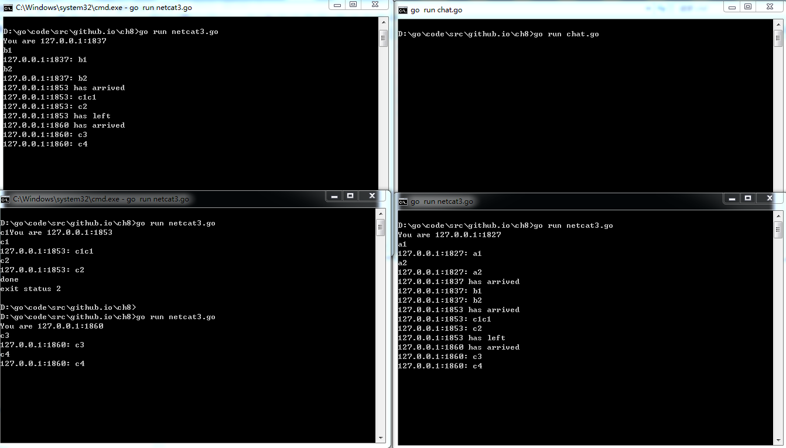

这是go 关键的并发编程的几个例子，看看是不是go协程和channel使得并发编程更简洁，不过对于线程间共享变量的线程安全问题，解决思路和java大同小异.
下面是几个例子，第一个例子模拟一个聊天服务器，这个例子可运行. 第二个例子是模拟一个有锁的缓存服务. 第三个例子是模拟一个无锁基于通信的缓存服务。先看第一个例子： 聊天服务器, 首先运行：
go run chat.go
再运行几个(比如3个)客户端：
go run netcat3.go
效果如下：
.
每个client连接了就会调用handleConn,这个方法里有三个channel,其中”进入”消息会放入ch中,并且在”进入”和”离开”时这个ch也会放入entering和leaving中(看！channel里套channel), 同时,”进入”、”离开”、用户敲字的消息都会放入messages中. 所以,ch是每个client各自有的,entering、leaving、messages是全局的.
broadcaster会轮询,如果是entering或者leaving有消息,则加入或者删除clients这个map对应的key，这个key就是ch.如果messages有消息，则轮询clients的key，发送给各自client的ch.
(注：所有代码来自于go圣经这本书)1
2
3
4
5
6
7
8
9
10
11
12
13
14
15
16
17
18
19
20
21
22
23
24
25
26
27
28
29
30
31
32
33
34
35
36
37
38
39
40
41
42
43
44
45
46
47
48
49
50
51
52
53
54
55
56
57
58
59
60
61
62
63
64
65
66
67
68
69
70
71
72
73
74
75
76
77
78
79// chat.go
// Chat is a server that lets clients chat with each other.
package main
import (
"bufio"
"fmt"
"log"
"net"
)
type client chan<- string // an outgoing message channel
var (
entering = make(chan client)
leaving = make(chan client)
messages = make(chan string) // all incoming client messages
)
func broadcaster() {
clients := make(map[client]bool) // all connected clients
for {
select {
case msg := <-messages:
// Broadcast incoming message to all
// clients' outgoing message channels.
for cli := range clients {
cli <- msg
}
case cli := <-entering:
clients[cli] = true
case cli := <-leaving:
delete(clients, cli)
close(cli)
}
}
}
func handleConn(conn net.Conn) {
ch := make(chan string) // outgoing client messages
go clientWriter(conn, ch)
who := conn.RemoteAddr().String()
ch <- "You are " + who
messages <- who + " has arrived"
entering <- ch
input := bufio.NewScanner(conn)
for input.Scan() {
messages <- who + ": " + input.Text()
}
// NOTE: ignoring potential errors from input.Err()
leaving <- ch
messages <- who + " has left"
conn.Close()
}
func clientWriter(conn net.Conn, ch <-chan string) {
for msg := range ch {
fmt.Fprintln(conn, msg) // NOTE: ignoring network errors
}
}
func main() {
listener, err := net.Listen("tcp", "localhost:8000")
if err != nil {
log.Fatal(err)
}
go broadcaster()
for {
conn, err := listener.Accept()
if err != nil {
log.Print(err)
continue
}
go handleConn(conn)
}
}
1 | // 客户端netcat3.go |
第二个例子是模拟缓存，这个例子只是代码片段，不能跑起来，只是看看实现缓存的思路,关键是这个Get,如果有很多不同线程调Get, 使用了一个互斥量来保护多个goroutine调用Get时的共享map变量, key不同的话，那么倒无所谓,因为各自entry有各自的ready，但是假设有n个线程同时调用Get，此时还没有value,那么只有一个线程(线程A)会进入 if e==nil 这段里,这样确保相同key只有一个线程会请求memo.f..，并且另外的线程(线程B)在else后的 <-e.ready处等待，直到线程A放入值后close(e.ready), 线程B才继续往下返回memo中的值.1
2
3
4
5
6
7
8
9
10
11
12
13
14
15
16
17
18
19
20
21
22
23
24
25
26
27
28
29
30
31
32
33
34
35
36
37
38
39
40
41
42package memo
import "sync"
// Func is the type of the function to memoize.
type Func func(string) (interface{}, error)
type result struct {
value interface{}
err error
}
type entry struct {
res result
ready chan struct{} // closed when res is ready
}
func New(f Func) *Memo {
return &Memo{f: f, cache: make(map[string]*entry)}
}
type Memo struct {
f Func // 可以是根据key获取结果的任意方法,比如从网络获得结果，或从数据库获得结果等等
mu sync.Mutex // guards cache
cache map[string]*entry
}
func (memo *Memo) Get(key string) (value interface{}, err error) {
memo.mu.Lock()
e := memo.cache[key]
if e == nil {
// This is the first request for this key.
// This goroutine becomes responsible for computing
// the value and broadcasting the ready condition.
e = &entry{ready: make(chan struct{})}
memo.cache[key] = e
memo.mu.Unlock()
e.res.value, e.res.err = memo.f(key)
close(e.ready) // broadcast ready condition
} else {
// This is a repeat request for this key.
memo.mu.Unlock()
<-e.ready // wait for ready condition
}
return e.res.value, e.res.err
}
下面是无锁使用通信方式建立并发程序，不好说特定情境下哪种更好.
无锁并发的基本思路是，一个全局的channel:requests,每次Get会放入一个request,request中包含key和channel:response, response中放得是结果数据result,Get代码还是很简洁的.
那么每次Get请求入队后发生什么呢,就看server方法,其从requests中轮询出队,如果cache中key对应*entry为nil，则是第一次进入的请求，则初始化entry放到cache中,其中entry.res还没数据,下面并发调用call来填充数据,填充完后并发调deliver返回数据. 而deliver就是首先<-e.ready等待，如果call中关闭了reday则把res数据放入response中.这样Get就可以取到数据了。
这就是模拟串行化的一个Get请求,我们可以想象，多线程请求就是这个过程变成并发的多个，这里面的requests是全局的，而response这个channel是每个线程独有的,ready这个channel是cache中的entry，可以认为是每个key独有的。
所以我们可以看到，在全局requests channel会是个阻塞队列,不过”放”和”取”都是单独协程
这是模拟cache中没有key和entry的流程:
req{key, chan response} ==> chan requests ==> req<-requests ==> cache{key:req.key,entry:{chan ready}} ==> 空chan(每个entry独有) ==> <- entry.ready(等待)(deliver方法中) ==> entry.res=f(key)(call方法方法中) ==> close(entry.ready)(call方法方法中) ==> response <- entry.res(call方法方法中) ==> res := <-response (deliver方法中)
而下面是模拟cache中有key和entry的流程:
req{key, chan response} ==> chan requests ==> req<-requests ==> cache{key:req.key,entry:{chan ready}} ==> <- entry.ready(deliver方法中,由于有数据已经close了所以无需等待) ==> response <- entry.res ==> res := <-response
1 | package memo5 |